About Me — Greetings! I am Ahmed Mughram, a Software Architectural Developer & UI/UX Designer, mastering the art of crafting seamless user experiences while developing resilient, scalable software systems with elegance and precision. — As a Programmer, my approach transcends mere coding; I architect intricate, multifaceted systems with intentional clarity, addressing even the most complex challenges with refined logic. From implementing advanced algorithms to optimizing structural efficiency, my work exemplifies technical depth—delivering solutions that are not only functional but engineered to endure. — My passion for UI/UX design is equally profound, where I blend creativity with a deep sense of empathy. I believe that true innovation lies in understanding the nuances of the human experience, and I strive to create interfaces that are both visually captivating and inherently intuitive. Whether in the initial wireframing of concepts or refining the subtle interactions of a design, I remain steadfast in my commitment to user-centricity, ensuring every digital touchpoint feels natural and engaging. Familiar With 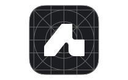 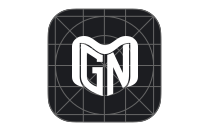 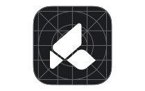 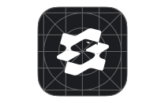 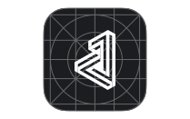 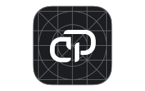 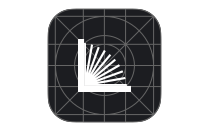 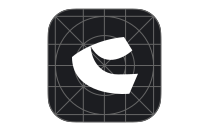 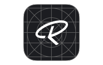 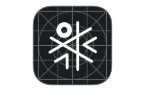 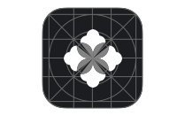 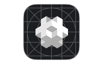 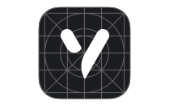 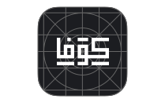
Resume Career DSShield 2025 — Present As a Software Programming Intern at DSShield, I contribute to the design and development of internal systems and tools, supporting the company’s core IT infrastructure. Working closely with the IT annex team, I assist in implementing scalable backend solutions, debugging complex issues, and enhancing software performance across development projects. My role bridges foundational programming practices with architectural thinking, enabling me to support both immediate development needs and long-term system goals within a collaborative engineering environment. Saqr (PDCO LLC) 2025 — 2025 Worked as a Contract Designer for Saqr (PDCO LLC), focusing on creating and refining the brand's core visual identity. My responsibilities included designing essential graphics, marketing materials, and digital assets that supported the company's overall branding and communication. Processor Dimensions Co. (PDCO LLC) 2023 — 2025 In my role as Operations & Business Development Manager, I led technical operations and business growth initiatives, managed complex customer issues, and fostered partnerships. I focused on optimizing operational processes, developing internal tools, and improving website functionality. Additionally, I oversaw business negotiations and served as a key decision-maker to balance technical and business priorities. J7 Code (Webstore) 2022 — 2023 I oversaw operations and strategic initiatives while designing all visual elements for the webstore, including product images and branding materials, which enhanced the overall aesthetic and functionality of the online shopping experience. VRoot Hosting (Webstore) 2021 — 2023 Responsible for overseeing operations and strategic planning while serving as the lead developer for the company's web store. Additionally, represented the company in various professional engagements and partnerships to enhance collaboration and business opportunities. Experience Tech Stack & Programming Expertise 2019 — Present With expertise in Python development since 2019, I specialise in API integration and command-line interface (CLI) applications. I previously freelanced on Fiverr, tackling complex software development projects, including advanced algorithms, and rigorously testing them to ensure optimal performance. Additionally, I have experience in JavaScript development (2022–2023), applying it to website development and API integration. I obtained a certificate from freeCodeCamp Academy, showcasing my dedication to mastering programming concepts and continuously improving my coding and web development skills. DSA, DBMS, AA 2021 — Present I study Data Structures and Algorithms (DSA) to refine problem-solving skills and optimise software performance. With Database Management Systems (DBMS), I enhance data organisation and integrity, while Advanced Algorithms (AA) enables me to tackle complex computational challenges effectively. ML, AI, DevOps 2023 — Present I focus on Machine Learning (ML) and Artificial Intelligence (AI) to build intelligent systems and uncover data insights. Alongside, I delve into DevOps to unify development and operations, ensuring efficient workflows and scalable, resilient software solutions. Full-Stack Development 2021 — Present Specialising in web development, I focus on designing intuitive user interfaces and experiences (UI/UX) while also integrating Full-Stack development to ensure seamless functionality, robust application structures, and cohesive frontend-backend interaction. UI/UX, Graphic Design 2015 — Present Specialising in User Interface (UI) design, I utilise Figma, Adobe Illustrator, and Adobe XD to craft intuitive, engaging interfaces for diverse industries and individuals. With a background in graphic design using Photoshop, I transitioned fully to UI/UX design. Education King Saud University 2025 — Present I am studying for a bachelor's degree at King Saud University, where I continue to develop a thoughtful and disciplined approach to inquiry, communication, and structured analysis. This academic journey deepens my understanding of complex ideas and sharpens my ability to engage with diverse perspectives in a meaningful way. Kangaroo Mawhiba - Mathematics & Science Academy 2018 — 2019 Participated in the Kangaroo Mawhiba Mathematics and Science Academy, achieving second place in the Eastern Province of Saudi Arabia in the Mawhiba competition for Mathematics and Science. This accomplishment reflects my strong aptitude for analytical thinking and problem-solving in scientific disciplines. LEGO Mindstorms NXT Brick (9841) Education 2015 — 2016 Participated in the LEGO Mindstorms NXT Brick (9841) education program at Industrial Jubail Schools, gaining hands-on experience in robotics and programming. This opportunity fostered my early interest in technology and engineering, developing foundational skills in problem-solving and innovation. Mawhiba - Multiple Cognitive Ability Test 2014 — 2015 Participated in the Mawhiba Multiple Cognitive Ability Test, achieving a score of 680 out of 880 at Jubail Industrial City. This achievement highlighted my cognitive strengths across various domains, reflecting an early aptitude for logical reasoning and problem-solving. Development Skills Programming Expertise 95% Full-Stack Development 75% Database Management 50% Linux Comprehension 45% Linguistics Arabic Language (Native) 100% English Language (C1-C2) 90% Russian Language (A1) 15% Chinese Language (A1) 10%
Certificates All freeCodeCamp Cisco OpenEDG Python Institute Select Category All freeCodeCamp Cisco OpenEDG Python Institute 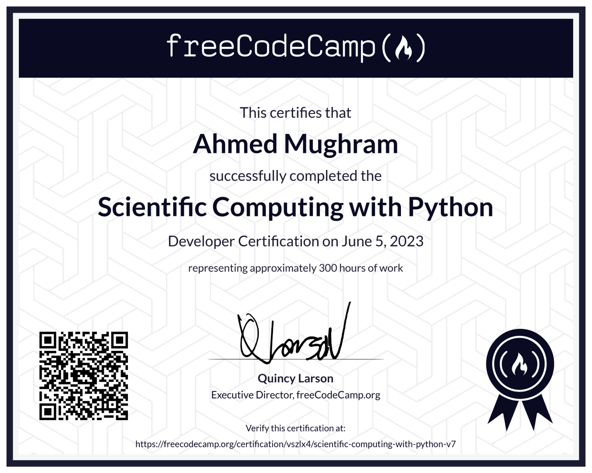 Scientific Computing with Python Verify Jun, 2023 | 300 hours 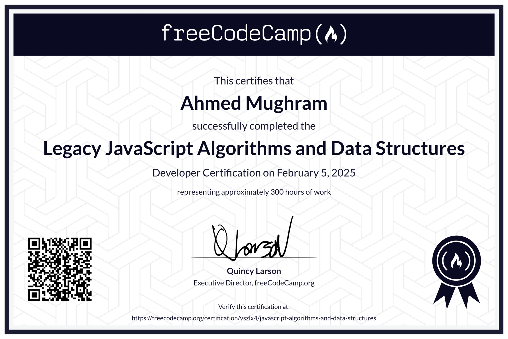 JavaScript DSA Verify Feb, 2025 | 300 hours 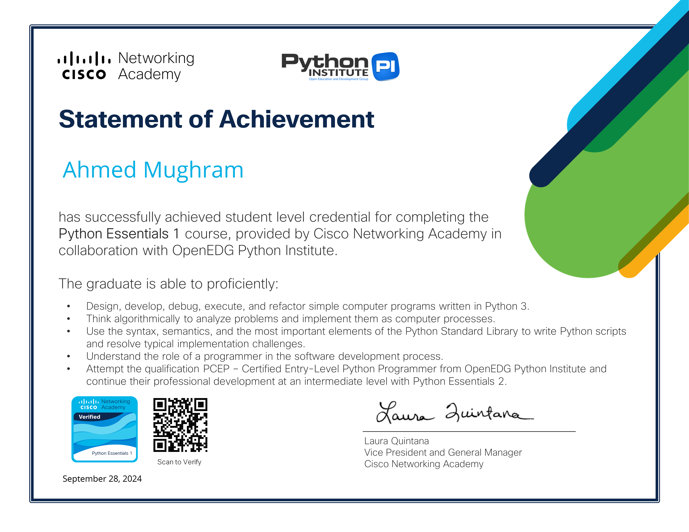 Python Essentials I (PCEP) Verify Sep, 2024 | 30 hours 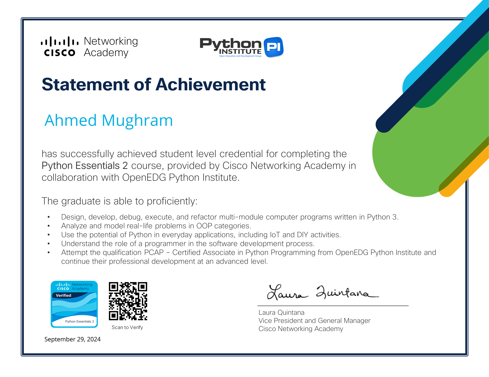 Python Essentials II (PCAP) Verify Sep, 2024 | 40 hours English for IT I Verify Sep, 2024 | 50 hours 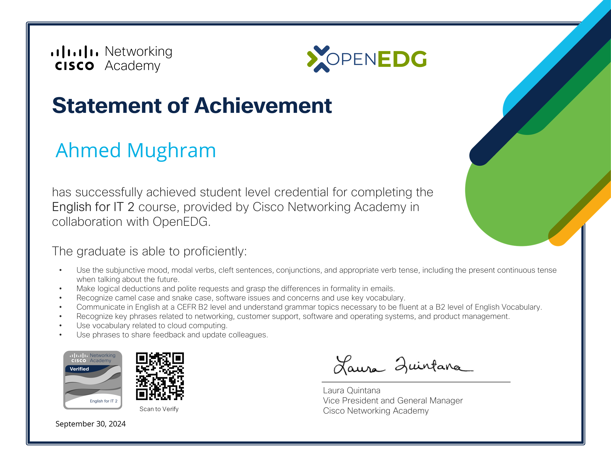 English for IT II Verify Sep, 2024 | 50 hours 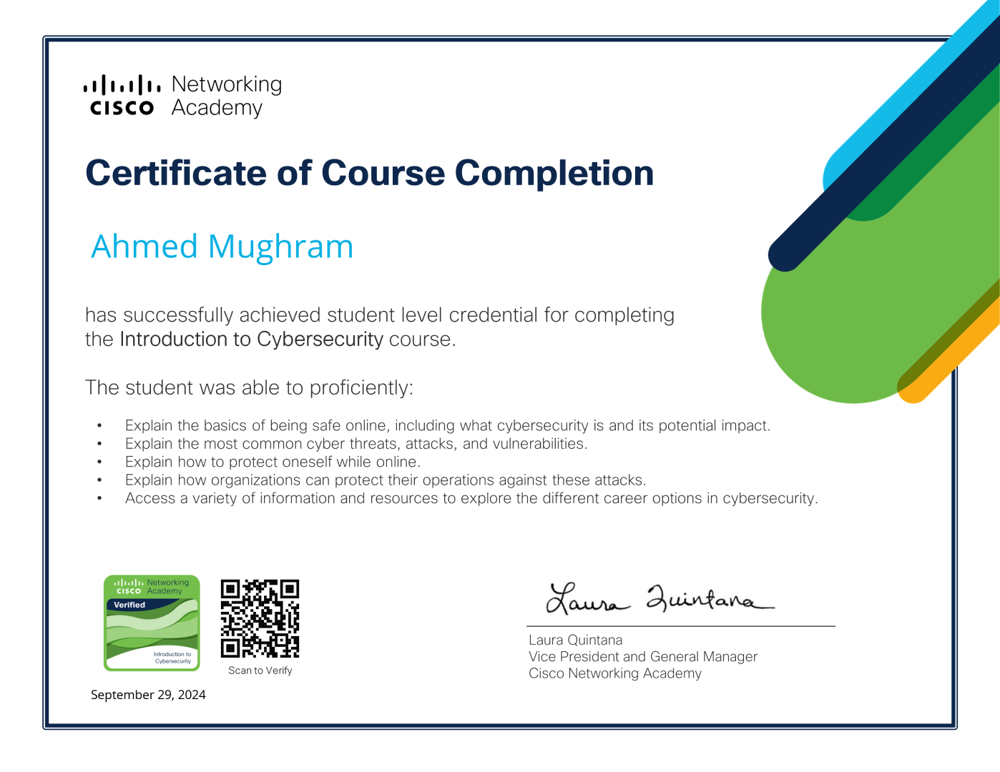 Introduction to CyberSecurity Verify Sep, 2024 | 6 hours